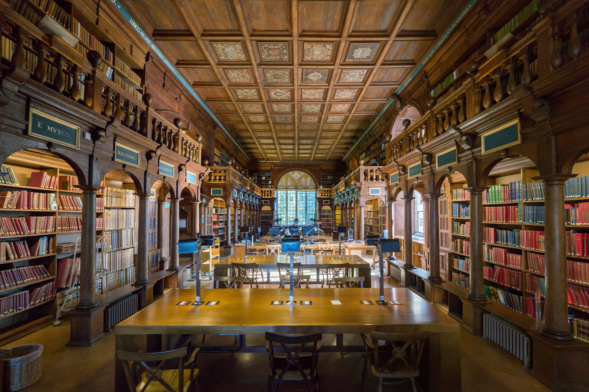

Academic Programmes
Every programme at Crestfield begins from the conviction that intellectual depth and disciplinary breadth reinforce each other.
Mathematics, analysis, probability and computational systems.
Design, operation and governance of complex systems.
Economics, institutional analysis and policy theory.
Quantum mechanics, nonlinear systems and modelling.
Biological systems integrated with computational methods.
Scientific revolutions, epistemology and ethics.
Every student completes a shared core curriculum covering:
